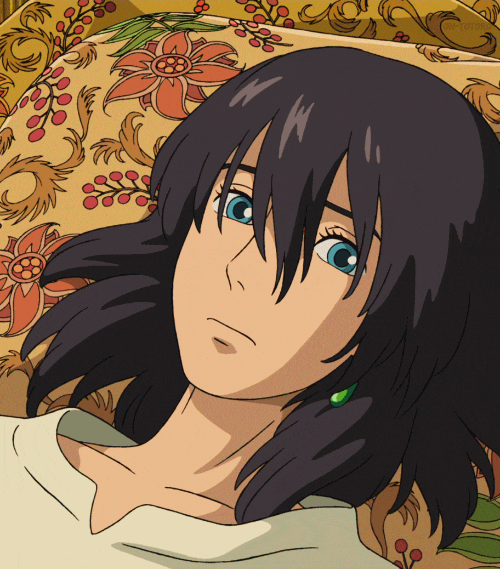

Howl's Moving Castle
Obviously, I'm not a beautiful girl. Only thing I can do is clean the house, though.
Sophie, you are beautiful. You really are.Good thing about being old is to have fewer things to lose.
How could anyone pass the beautiful place like this by a bloody battleship?To where's it heading? To towns to kill people...
Is that enemy or...? Both do the same thing. They kill each other.